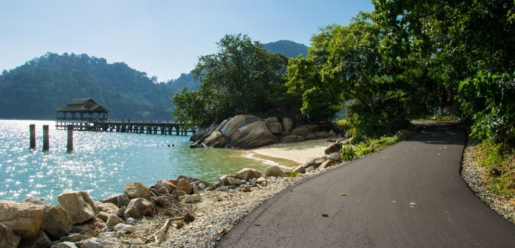

Interesting Destination in Perak: Pangkor Island
Pangkor Island, located off the coast of Lumut in Perak, is a charming holiday island that blends natural beauty, rich history, and unique local culture. Known for its beautiful white sandy beaches, clear blue waters, and lush tropical rainforest, Pangkor offers a peaceful and relaxing atmosphere, making it a popular destination for families and couples alike.
Pangkor’s historical background is also fascinating, with remnants like the centuries-old Dutch Fort (Kota Belanda) and the inscribed rock known as Batu Bersurat. The vibrant fishing village lifestyle adds to the island’s unique charm.
Popular Activities on Pangkor Island:
- Beach Relaxation: Unwind at tranquil beaches like Teluk Nipah, Pasir Bogak, or Coral Beach, all known for their clear waters and ideal snorkeling conditions.
- Snorkeling & Island Hopping: Join boat tours to nearby islets such as Giam Island, where you can discover colorful coral reefs and vibrant marine life.
- Visit Historical Sites: Explore the Dutch Fort (Kota Belanda) and Tiger Rock (Batu Bersurat), which tell the island’s old stories.
- Hornbill Watching: Pangkor Island is home to majestic hornbills, which are commonly spotted especially around Teluk Nipah.
Travel Preparation:
Pangkor Island is accessible by ferry from Lumut Jetty or Marina Island Jetty. On the island, unique pink vans serve as taxis for convenient transportation. The island can be visited all year round, though it’s best to avoid the heavy monsoon season if you plan to enjoy uninterrupted water activities.
Whether you’re looking to escape the hustle of city life, explore historical landmarks, or immerse yourself in natural beauty, Pangkor Island promises an unforgettable vacation experience.